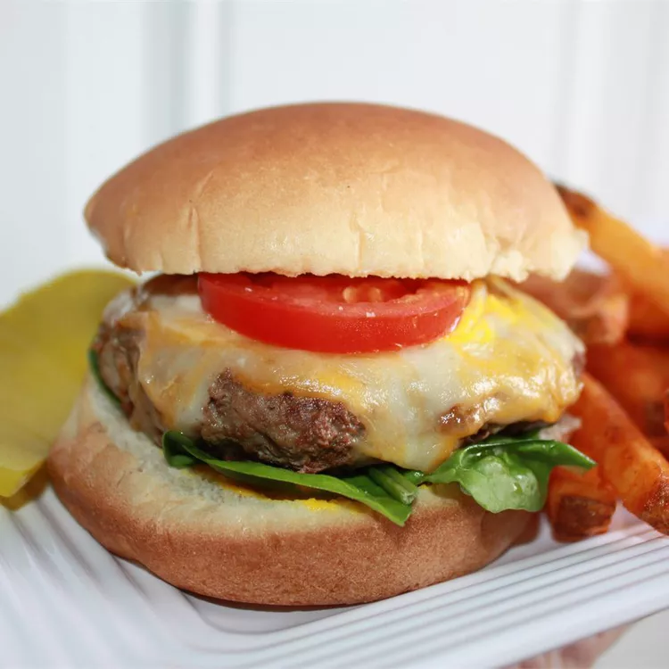

Turkey Burgers

Dry onion soup mix makes turkey burgers that are bursting with flavor.
Ingredients
- 1 pound ground turkey
- 1 packet dry onion soup mix
- ½ cup water
- ½ teaspoon salt
- ½ teaspoon ground black pepper
Steps
- Preheat a grill for high heat.
- In a large bowl, combine the ground turkey, soup mix, and water. Season with salt and pepper. Mix lightly using your hands, and form into 4 patties.
- Lightly oil the grill grate. Grill patties 5 to 10 minutes per side, until well done.